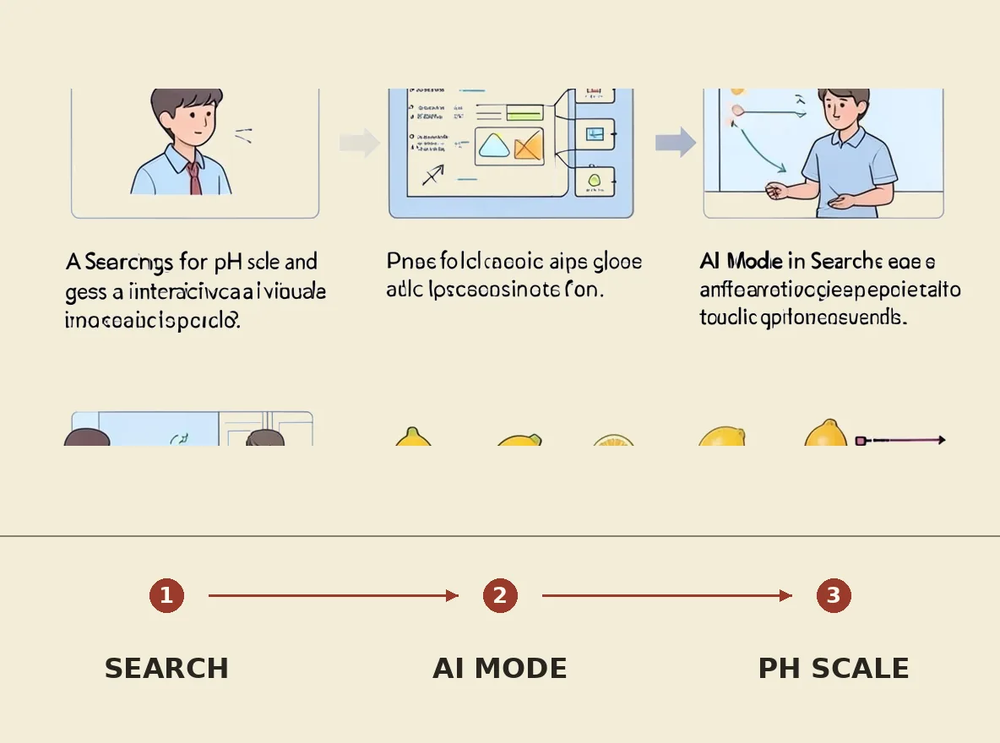

Google has launched new study tools across Search and Gemini, including AI-generated interactive visuals, 3D simulations, and customized practice quizzes. These tools allow students to create interactive experiences tailored to their questions, such as plotting citrus fruits on the pH scale. The new features aim to make Gemini the AI assistant that students turn to when learning and studying, competing with other companies offering learning and practice tools.